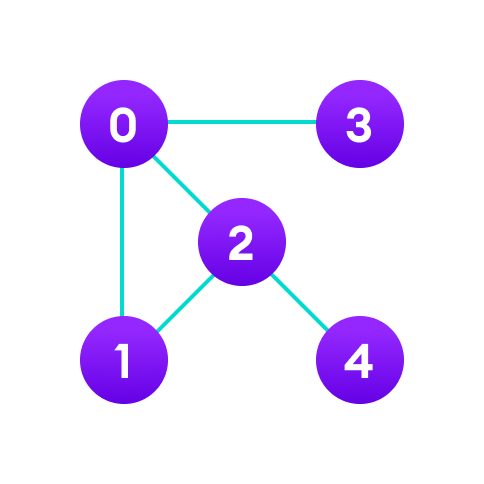

Data Structure
Data Structure is used to store data and organize data. It is a way of arrangaing data in a computer memory so that it can be accessed and updated efficiently. Depending on your requirement and project, it is important to choose the right data structure for your project.
Types of Data Structures
- Linear Data Strucutre
- Non-Linear Data Structure
Linear Data Strucutre
In linear data structures, the elements are arranged in sequence one after the other. Since elements are arranged in particular order, they are easy to implement.
However, when the complexity of the program increases, the linear data structures might not be the best choice because of operational complexities.
Examples:
Array
Stack
Queue
Linked Lists
An array is a collection of similar types of data. For example, if we want to store the names of 100 people then we can create an array of the string type that can store 100 names.
Memory Allocation in Array:
In an array, elements in memory are arranged in continuous memory. All the elements of an array are of the same type. And, the type of elements that can be stored in the form of arrays is determined by the programming language.
Arrays in JavaIn stack data structure, elements are stored in the LIFO
Unlike stack, the queue data structure works in the FIFO

In linked list data structure, data elements are connected through a series of nodes. And, each node contains the data items and address to the next node.
Non-Linear Data Structure
Unlike linear data structures, elements in non-linear data structures are not in any sequence. Instead they are arranged in a hierarchical manner where one element will be connected to one or more elements. Non-linear data structures are further divided into (2) data structures.
- Graph Based Data Structures
- Tree Based Data Structures
Graph Based Data Structures
In graph data structure, each node is called vertex and each vertex is connected to other vertices through edges.
Examples:
- Spanning Tree and Minimum Spanning Tree
- Strongly Connected Components
- Adjacency Matrix
- Adjacency List
Tree Based Data Structures

Similar to a graph, a tree is also a collection of vertices and edges. However, in tree data structure, there can only be one edge between two vertices.
Example:
- Binary Tree
- Binary Search Tree
- AVL tree
- B-tree
- B+ Tree
- Red-Black Tree
Why Data Structure?
Knowledge about data structures help you understand the working of each data structure. And, based on that you can select the right data structures for your project. This helps you write memory and time efficient code.
Programming is all about data structures and algorithms. Data structures are used to hold data while algorithms are used to solve the problem using that data.
| S# | Linear DS | Non-Linear DS |
|---|---|---|
| 1. | The data items are arranged in sequential order, one after the other | The data items are arranged in non-sequential order (Hierarchial manner) |
| 2. | All the items are present on the single layer | The data items are present at different layers |
| 3. | It can be traversed on a single run. That is, if we Start from the first element, we can traverse all the elements sequentially in a single pass | It requires multiple runs. That is, if we start from the first element it might not be possible to traverse all the elements in a single pass |
| 4. | The memoryutilization is not efficient | Different structure utilize memory in different efficient ways and depending on the need |
| 5. | The time complexity increase with the data size. | Time complexity remains the same. |
| Example: | Arrays, Stacks, Queue, Linked Lists | Tree, Graph, Map |
What are Algorithms?
Simply put, an algorithm is mentioning steps to solve a problem
Problem: Find factorial of n
Initialize fact = 1
For every value v in range 1 to n:
Multiply the fact by v
fact contains the factorial of n
Here, the algorithm is written in English. If it was written in a programming language, we would call it to code instead. Here is a code for finding the factorial of a number in C++.
int factorial(int n) {
int fact = 1;
for (int v = 1; v <= n; v++) {
fact = fact * v;
}
return fact;
}
Stack
Read More:
Stack Data Structure - ProgramizA stack is a linear data structure that uses the LIFO (last in first out) principle. Which means whatever data was input last is going to be the first one to be removed.
> Example: think of a pile of plates, stored one on top of another. This is called a "Stack" of plates. The plate that was put on top is going to be the first one to get removed. To get the plate at the bootom, you need to remove ALL of the plates stored on top of it.
- LIFO Principle of Stack
In programming terms, putting an item on top of the stack is called push and removing an item is called pop.
- Basic Operations of Stack
There are some basic operations that allow us to perform different actions on a stack.
- Push: Add an element to the top of a stack
- Pop: Remove an element from the top of a stack
- IsEmpty: Check if the stack is empty
- IsFull: Check if the stack is full
- Peek: Get the value of the top element without removing
- Working of Stack Data Structure
The operations work as follows:
- A pointer called TOP is used to keep track of the top element in the stack.
- When initializing the stack, we set its value to -1 so that we can check if the stack is empty by comparing TOP == -1.
- On pushing an element, we increase the value of TOP and place the new element in the position pointed to by TOP.
- On popping an element, we return the element pointed to by TOP and reduce its value.
- Before pushing, we check if the stack is already full
- Before popping, we check if the stack is already empty
- Working of Stack in Java
// Stack implementation in Java
class Stack {
private int arr[];
private int top;
private int capacity;
// Creating a stack
Stack(int size) {
arr = new int[size];
capacity = size;
top = -1;
}
// Add elements into stack
public void push(int x) {
if (isFull()) {
System.out.println("OverFlow\nProgram Terminated\n");
System.exit(1);
}
System.out.println("Inserting " + x);
arr[++top] = x;
}
// Remove element from stack
public int pop() {
if (isEmpty()) {
System.out.println("STACK EMPTY");
System.exit(1);
}
return arr[top--];
}
// Utility function to return the size of the stack
public int size() {
return top + 1;
}
// Check if the stack is empty
public Boolean isEmpty() {
return top == -1;
}
// Check if the stack is full
public Boolean isFull() {
return top == capacity - 1;
}
public void printStack() {
for (int i = 0; i <= top; i++) {
System.out.println(arr[i]);
}
}
public static void main(String[] args) {
Stack stack = new Stack(5);
stack.push(1);
stack.push(2);
stack.push(3);
stack.push(4);
stack.pop();
System.out.println("\nAfter popping out");
stack.printStack();
}
}